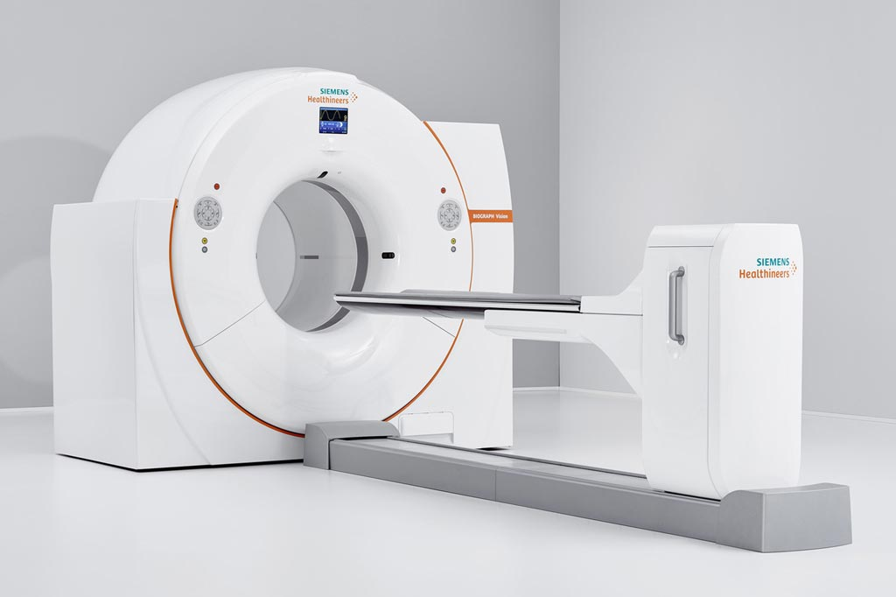

Nuevas Tecnologías
El Centro diagnóstico Curie incorpora un equipo de tomografía por emisión de positrones con tomógrafo computado.

El PET/TC es un componente clave de vanguardia en el diagnóstico oncológico. Permiteidentificar enfermedades oncológicas y realizar un seguimiento y monitoreo de las mismas y tratar patologías a nivel molecular. El PET/TCes un instrumento invalorable para la identificación de tumores, estatificación y monitoreo deltratamiento y seguimiento en tratamientos quimio y radioterápicos y evaluación pre y post quirúrgica.
Nuestros médicos, técnicos y físicos practican y supervisan los procedimientos en un ambiente seguro y confortable.